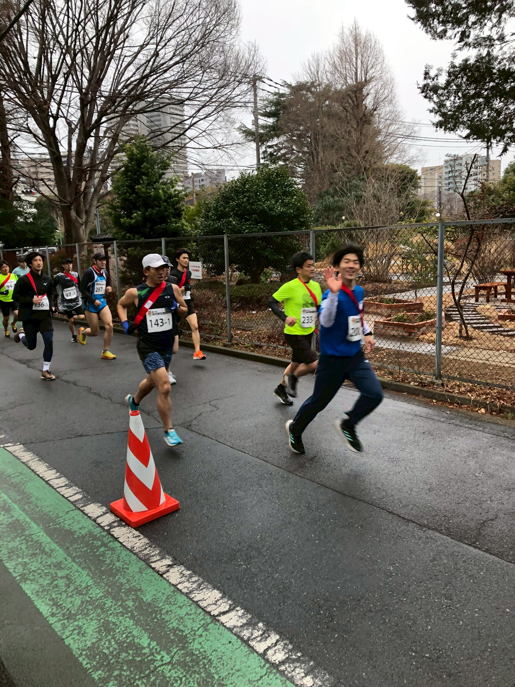
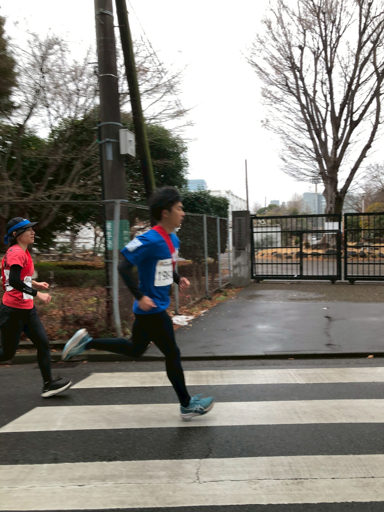
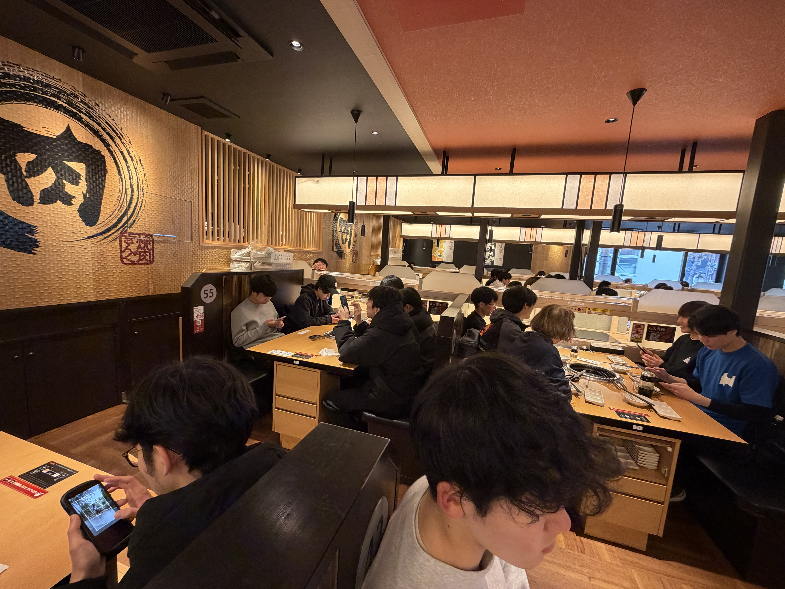

府中駅伝

2026年2月11日（建国記念の日）に開催された府中駅伝に、青雲寮は一般の部で4チームが出場しました。会場は府中の野球場がスタート地点。府中市内をぐるっと回って同じ地点に戻ってくるコース（総距離20.7km）を、5人でタスキをつなぎました。
当日は気温5℃、雨が降る厳しいコンディション。それでも4チームすべてが完走し、寮行事としての府中駅伝が、今年も確かな思い出として刻まれました。
「寮の一体感」をつくる行事として、参加が定着
青雲寮が府中駅伝に初めて参加したのは3年前。それ以来、参加人数は年々増え、コロナ明けの寮行事として定着してきました。今年は当初21人が参加予定でしたが、当日はインフルエンザや体調不良の影響で走者は19人に減少。それでも「二区間を走る」ことを買って出た寮生が現れ、結果として4チームでの出場を実現しました。
応援・サポートには寮長・寮母も加わり、当日に関わった人数は最大で21人ほど。走る人だけでなく、支える人も含めて"寮全体で挑む駅伝"となりました。
練習と声掛けが支えた完走――寒雨の中で生まれた「感動」
駅伝は終了時刻（競技の締め切り）が決まっている競技です。運動に慣れていない寮生もいる中で、「全員が時間内に走り切れるか」は正直なところ不安もありました。さらに当日は寒雨の5℃。身体が冷えると肉離れなどのケガが起きやすく、その点は大きな心配事でした。
だからこそ、事前の準備が当日の土台になりました。練習会は約1か月前から始め、2週間の間に合計3回実施。1回あたり4km程度を走り、府中市内のコースや府中の森公園で足をつくりました。走るために新しい靴を用意し、自主的に練習を重ねる寮生もおり、少しずつ「走り切るための準備」が整っていきました。
そして当日、心を支えたのは"声"でした。1区を走り終えた選手が、ゴール手前400mほどの地点に立ち、「あとちょっとで終わるから頑張れ」と後続の選手を励まし続ける。疲れているはずの選手が前に立ち、仲間の背中を押す――その光景が、寮の団結を目に見える形にしました。
完走できるとは思っていなかった分、全チームがタスキをつないで帰ってきた瞬間に込み上げたのは「感動」でした。


大会結果（一般の部／20.7km）と、恒例の打ち上げ
4チームの結果は以下の通りです（一般の部）。
青雲寮チームA（ナンバー198）
タイム 1:28:30／種目別順位 111/304
1区 0:16:31、2区 0:15:50、3区 0:22:39、4区 0:16:52、5区 0:16:38
青雲寮チームB（ナンバー200）
タイム 1:34:30／種目別順位 155/304
1区 0:18:50、2区 0:15:33、3区 0:17:50、4区 0:20:50、5区 0:21:27
青雲寮チームC（ナンバー201）
タイム 1:41:45／種目別順位 215/304
1区 0:20:31、2区 0:20:44、3区 0:18:55、4区 0:21:58、5区 0:19:37
青雲寮チームD（ナンバー202）
タイム 1:48:24／種目別順位 259/304
1区 0:22:13、2区 0:18:32、3区 0:27:00、4区 0:23:14、5区 0:17:25
走り終えたあとは、恒例の焼肉で打ち上げ。練習から当日までの出来事を振り返りながら、完走の達成感を分かち合いました。
「みんなで参加して、みんなで練習して、最後はみんなで焼肉で締める」――府中駅伝は、青雲寮の一体感を育てる行事として、今年も確かな輪郭を持って積み重なりました。
